Module 6—Stoichiometry
 Read
Read
Read “Applications of Stoichiometry” on page 292 of your textbook.
 Self-Check
Self-Check
SC 5. Complete questions 8 and 10 of “Section 7.2 Questions” on page 293 of your textbook.
Self-Check Answers
SC 2. Section 7.2 Questions 8 and 10, page 293
- a.
2 AgNO3(aq)
+
Na2CrO4(aq)
→
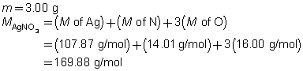
Ag2CrO4(s)
+
2 NaNO3(aq)
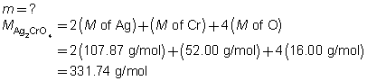
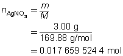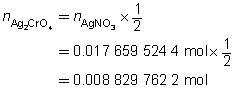
The mass of the precipitate is predicted to be 2.93 g.
b. 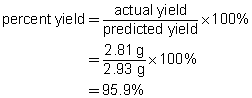
- a.
BaCl2(aq)
+
Na2SO4(aq)
→
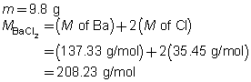
BaSO4(s)
+
2 NaCl(aq)
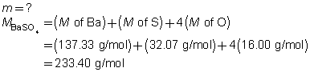
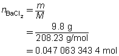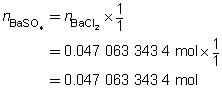
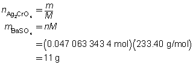
The mass of the precipitate is predicted to be 11 g.
b. 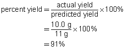
c. The percent yield suggests that minor mistakes were made during the experiment. These mistakes may have involved a loss of product while handling the precipitate or a loss of reactant during the preparation. The result is within the 5%–10% margin normally expected for school laboratory work.
 Module 6: Lesson 2 Assignment
Module 6: Lesson 2 Assignment
You will complete the questions for the following lab as your assignment for this lesson.
 Lab: Decomposition of Malachite
Lab: Decomposition of Malachite
Problem
Are predictions made using the stoichiometric method supported by experimental evidence?
Purpose
The following virtual lab will test the prediction you made in the pre-lab exercise. Before beginning the lab, ensure you read through all parts of the laboratory, including the background, procedure, and assignment. As you read through the procedure, you may wish to make a data table to record your observations.
Decomposition of Malachite Virtual Lab
Module 6: Lesson 2 Assignment
To complete your assignment as an online quiz, click on Module 6 Lesson 2 Assignment in the "Quizzes".
To complete your assignment as an MSWord document, click Module 6 Assignment 2.